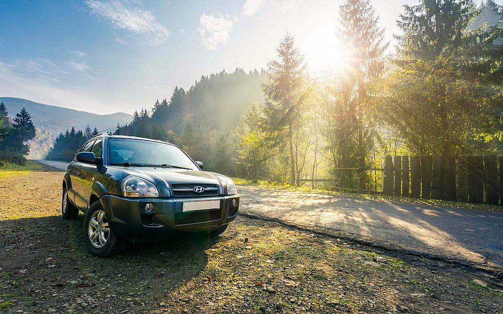
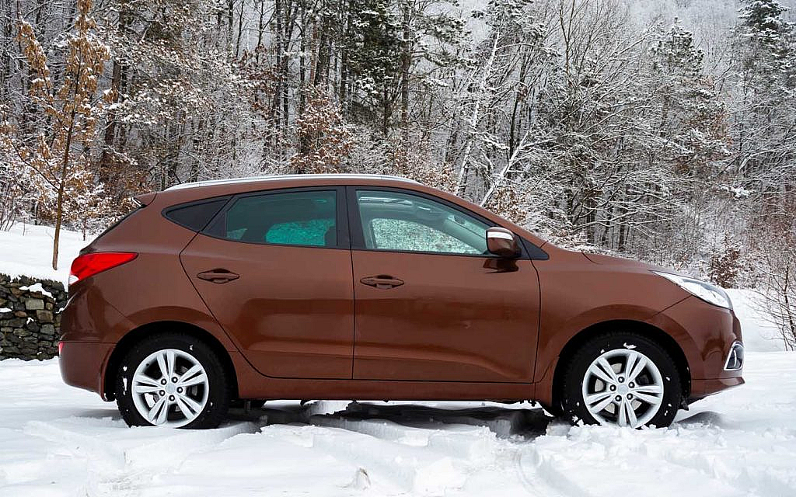
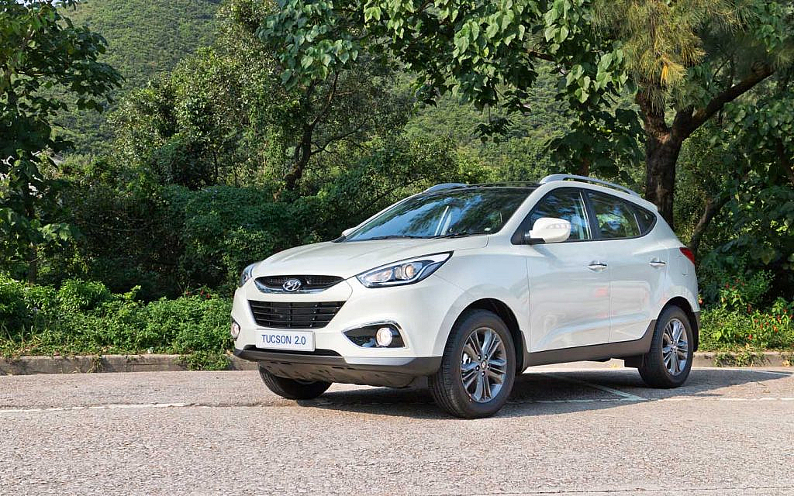
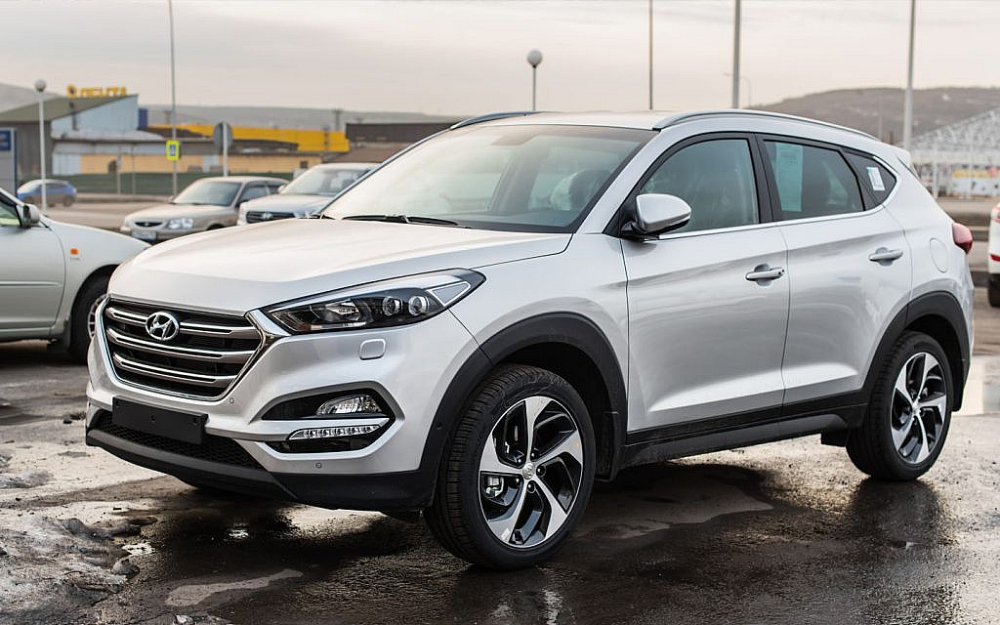
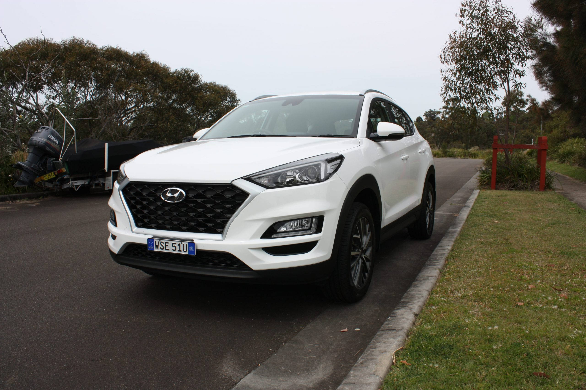
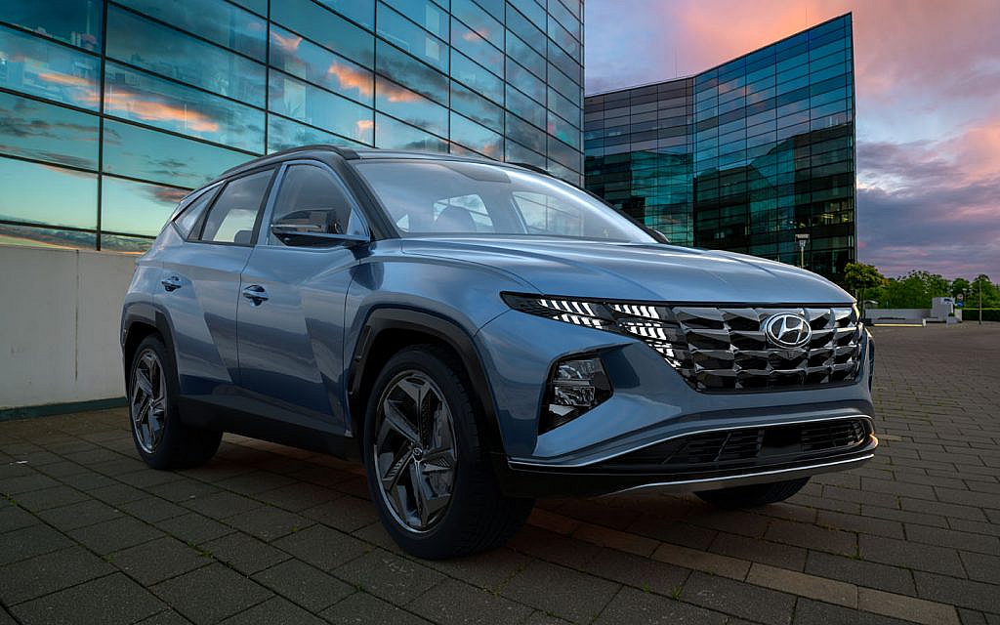

Car History: Hyundai Tucson
Hyundai is one of the most popular automobile brands across the globe.
The brand is credited for rolling off vehicles equipped with
technologically advanced features. Along with this, the price and
feature equilibrium is also important factor that contributes to its
popularity. Although the brand has been manufacturing vehicles since
the 1960s, it started manufacturing SUVs in the 2000s. Despite being
relatively new in the category, Hyundai’s SUV performed significantly
well, especially the Tucson. The first Tucson model was released
almost two decades ago and since then it is performing exceptionally
in the SUV category.
Let’s take a closer look at the Hyundai Tucson history, its different
models and generations.
HYUNDAI TUCSON GENERATIONS
The exceptional performance of the Hyundai Tucson is testified by the
used non-luxury annual car market report 2021 in which Hyundai is
ranked among the top used SUVs.
Here is the complete Tucson history that will further elaborate on
this iconic SUV series:
HYUNDAI TUCSON FIRST GENERATION (2005 TO 2009)

The first model of the Hyundai Tucson was released in 2005. The car
was manufactured on the heavily modified Elantra platform. First
generation Tucson was available in three different trim levels: GL,
GLS and GLX.
This mid-size SUV has a shorter height and a wider wheelbase that
caters to its rugged-off exterior. The radiator grille was sandwiched
between two eye-shaped headlights. Contours were present on the body
that runs from the front to the rear end.
For the interior, Hyundai opted for a simple dashboard design that
features easy-to-read gauges and metres. The comfortable seats were
available with optional leather or fabric covers. For maximum
protection, side airbags were also installed in the cabin.
This generation of Hyundai Tucson was powered by a 2.0-litre
4-cylinder engine paired with a 4WD drivetrain system and a 4-speed
automatic transmission system. To make it suitable for off-roading, a
low-range transfer case, stability control, traction control and
antilock brakes were also present.
HYUNDAI TUCSON SECOND GENERATION (2009 TO 2013)

The second generation Tucson was released at the Frankfurt Motor Show
in 2009. This generation was completely different from the old Tucson
model. The second generation receives a major facelift with redesigned
exterior and interior.
The old eye-shaped headlights were replaced with more elongated and
pointed headlights. Whereas, the previous contours were replaced with
sharp angles and lines running from front to rear end. At the rear
end, a hatchback-styled tailgate was present to accompany this new
appearance of Tucson. Along with this, alloy wheels were offered in
all the trim levels of this generation.
The interior was also redesigned with an updated dashboard, centre
console, stack and comfortable seats. Moreover, the rear flat floor
also aids in increasing the comfort level.
Under the hood, 2.0 and 2.4-litre engines were available with an AWD
drivetrain system. This drivetrain system was supported by a 5-speed
manual or 6-speed automatic transmission system.
HYUNDAI TUCSON SECOND GENERATION FACELIFT (2013 TO 2015)

The facelifted version of the second-generation Tucson was introduced
in 2013. The front fascia was redesigned with large bumpers and
foglights. Along with this, projector lamps and LED daytime running
headlights and taillights were installed. Moreover, an optional
panoramic glass roof with roof rails was also available.
The length of the wheelbase was increased making the cabin more
spacious. In this spacious cabin reclining back, seats and cup holders
were present. For the drivers, a pale-blue backlit instrument cluster
was installed that provided necessary details regarding the vehicle.
Furthermore, to keep the cabin pleasant, Tucson features a
germ-killing ioniser and climate control system.
However, no significant changes were observed under the hood. A 2.0
and 2.4-litre 4-cylinder engine and 6-speed automatic transmission
system were constant. However, an optional 2WD or AWD drivetrain
system was also available.
HYUNDAI TUCSON THIRD GENERATION (2016 TO 2018)

The third-generation Hyundai Tucson was unveiled at the 2015 New York
International Auto Show. This generation was completely different from
Hyundai Tucson’s old models. The front fascia features a signature
Hyundai hexagonal radiator grille, LED twin projectors and LED daytime
running headlights. The wheelbase was widened which increases the
overall comfort and ride experience. For the first time, optional
19-inch alloys were also offered to the customers.
The interior was refined to provide a premium experience to the
travellers. A touch-screen infotainment system and leather-wrapped
instrument panel as standard. Along with this, the car also features a
Blue Link system that enhances the overall safety of the vehicle. The
Blue Link was supported by an Android system through which drivers can
lock/unlock doors, and find and trace the location of their car.
The car was powered by a 2.0-litre engine accompanied by a 6-speed
automatic transmission system and an AWD drivetrain. To increase its
off-roading capabilities, Hyundai installed a hillstart assist,
downhill brake control system in the third generation of Tucson.
HYUNDAI TUCSON THIRD GENERATION FACELIFT (2019 TO 2020)

In the facelifted version of Tucson’s third generation, the headlights
were redesigned and uplifted daytime running lights were introduced.
Whereas, the brake lights were more narrowed and submerged with the
tailgate. At the front, large air-intakes were also present to
complete the sharp exterior of the car plus a redesigned grille that
makes it look fancy.
The interior was also redesigned with an upgraded dashboard and newly
designed air vents. Along with this, the side mirror, instrument
cluster and centre stack were also upgraded.
The engine lineup remains the same as in the third generation.
However, collision avoidance system and lane-keeping assist systems
were embedded for enhanced safety.
HYUNDAI TUCSON FOURTH GENERATION (2020 TO PRESENT)

The latest generation of the Tucson is an SUV-Coupe style and does not
resemble its predecessors. At the front, a large radiator grille, 3D
design headlights and redesigned bumpers are present. Whereas, flared
fenders are present at both ends.
The interior features a flat minimalistic dashboard with two dial
instrument cluster and a large infotainment system present at the
centre.
Three engines are available in this generation, a 2.0-litre, 1.6T-GDi
smart stream petrol engine and 1.6 T HEV hybrid engine. Both engines
are supported by drive and terrain modes. Whereas, for better safety,
Hyundai smart sense is installed.
This was the complete Hyundai Tucson history. Since its inception,
Tucson has secured a significant position in the SUV category because
of the features and comfort it provides.